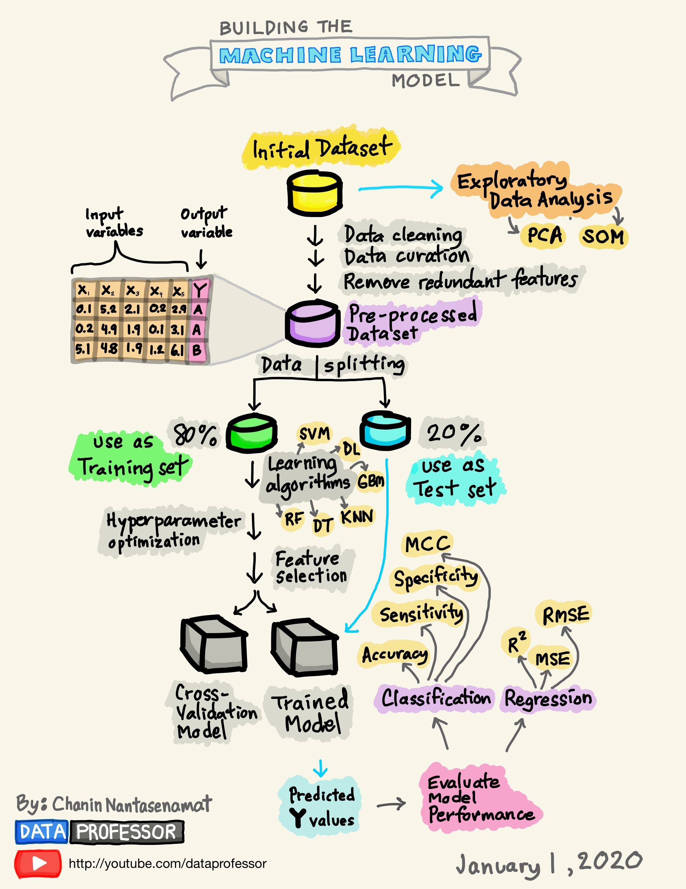
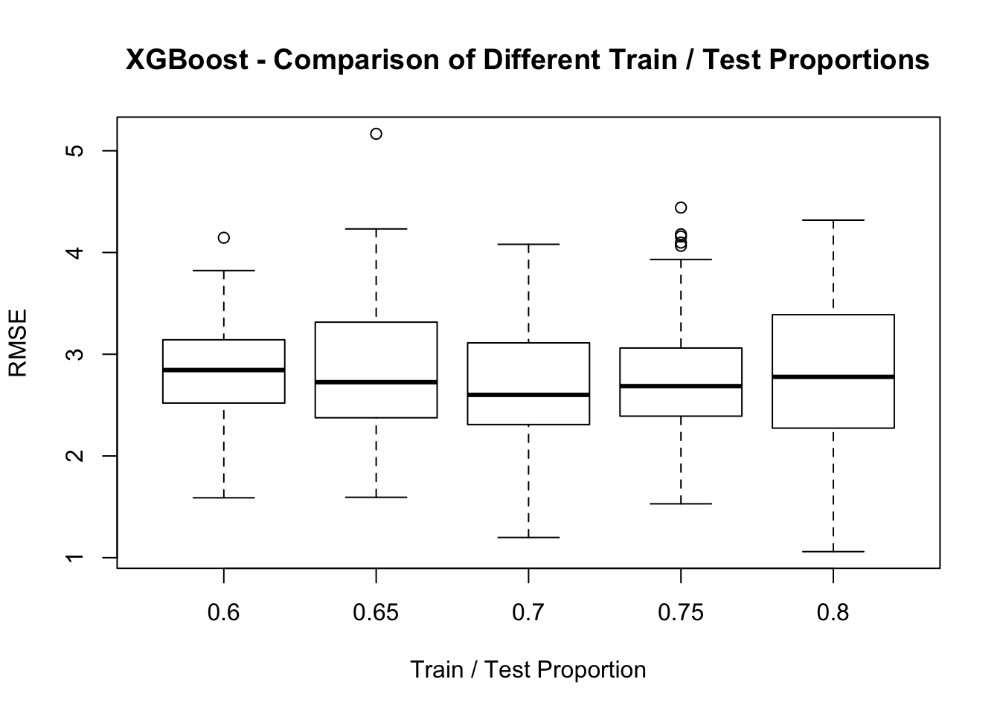
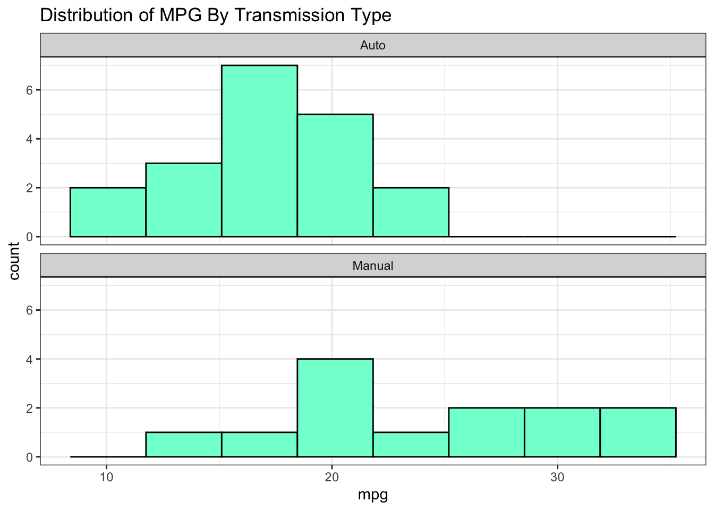

Chapter 3 A Motivating Example
Here is a high level over view of an ML work flow. Note that:
- It is a cycle, quite likely to be repeated multiple times before arriving at some actionable result
- The driving questions / hypotheses are subject to change, redefinition, or abandonment
- Multiple people might be involved
You will need to install and then load the following packages. There will be more as you work through the examples.
library(tidyverse)
library(rpart)
library(caret)
library(pls)
library(mlbench)
library(DataExplorer)3.1 Suggested Workflow
Thus far we haven’t gotten our hands dirty but we’ll need to do that if we want an experiential approach to any of this. It’s useful to have a schematic that outlines the general process. Consider the following workflow. In general this is a solid representation of what one might do as part of building a predictive model.

Let’s keep working with the mtcars data frame:
Motor Trend Car Road Tests
The data was extracted from the 1974 Motor Trend US magazine,
and comprises fuel consumption and 10 aspects of automobile
design and performance for 32 automobiles (1973–74 models).
A data frame with 32 observations on 11 (numeric) variables.
[, 1] mpg Miles/(US) gallon
[, 2] cyl Number of cylinders
[, 3] disp Displacement (cu.in.)
[, 4] hp Gross horsepower
[, 5] drat Rear axle ratio
[, 6] wt Weight (1000 lbs)
[, 7] qsec 1/4 mile time
[, 8] vs Engine (0 = V-shaped, 1 = straight)
[, 9] am Transmission (0 = automatic, 1 = manual)
[,10] gear Number of forward gears
[,11] carb Number of carburetors3.2 Visualizations
This is a big topic on its own but winds up being the gaetway into forming hypotheses to help drive the aims of any machine learning project. On the other hand, some people just start building models with variables they beleive to be of interest and only later worry about how the data might look. With respect to the above data frame, the idea of Fuel Economy is usually a popular conceptwhich then leads one to look at the mpg feature in the data set. Or, when we look at the Pima Indians dataset, we’ll see that the “diabetes” column is sure to be of interest to someone wanting to use other variables from that dataset to predict whether someone has that disease or not.
Not all datasets have a clear cut variable that you are trying to predict. Sometimes you go on a “fishing expedition” to find interesting variabesl and it’s only after working with the data, buildind models, and evaluating them that one comes to an understanding of what variables / features are actually relevant. In the mean time though, doing some plots can be helpful
3.2.1 Scatterplots
For contiunuous quantities, things like histograms, scatterplots, strip charts, and dot plots can be useful. Let’s look at a pairs() plot which plots each variable in the data frame against all others to see if there are any obvious linear relationships between any of the variables. Some of these variables can be considered as factors or categories (such as cyl, vs, am, gear, and carb) so for now we will exclude them to focus only on the continuous / measured variables.

This plot is rather busy but instructive nonetheless as it confirms the idea that some variables, such as am, vs, cyl, gear are more ordinal or categorical than truly numeric in nature. We could narrow down our plot by looking at just the continuous quantitites. This is also interesting in that we see a number of apparent linear or polynomial style relationships that might benefit from some form on linear modeling. If we are already thinking about how to deal with the mpg variable we can see that it is correlated with a number of variables.
We might also look at how MPG values are distributed across cylinder groups (4,6, or 8). The boxplot is an ideal choice for summarizing continuous data across groups. We check to see if there appear to be significant differences between the median MPG.
3.2.2 Boxplots
mtcars %>% mutate(cyl=factor(cyl)) %>%
ggplot(aes(x=cyl,y=mpg)) +
geom_boxplot() + theme_bw() + ggtitle("MPG Across Cylinder Groups")The same could be done for tranmission types where we can definitely see a difference emerging between MPG for Automatic (0) vs Manual (1) Transmissions.
mtcars %>% mutate(cyl=factor(cyl),am=factor(am,labels=c("Auto","Manual"))) %>%
ggplot(aes(x=am,y=mpg)) +
geom_boxplot() + theme_bw() +
ggtitle("MPG Across Transmission Types") + xlab("Transmission Type")If we wanted to look at above relationships simulatenously we could use something like ggplot to help us.
mtcars %>% mutate(cyl=factor(cyl),am=factor(am,labels=c("Auto","Manual"))) %>%
ggplot(aes(x=am,y=mpg)) +
geom_boxplot() + facet_wrap(.~cyl) + theme_bw() +
ggtitle("MPG Across Transmission Types And Cylinder Group") + xlab("Transmission Type") 
3.2.3 Histograms
Another favorite plot type for numeric data is the histogram although we don’t have much data here. Still, we can make a histogram of the MPG to get a sense of a possible distribution. This could look better but you get the overall message that most cars exhibit MPG in the range of 12-25 MPG.
mtcars %>% ggplot(aes(x=mpg)) +
geom_histogram(bins=15,fill="aquamarine",color="black") +
theme_bw() + ggtitle("Distribution of MPG")mtcars %>% ggplot(aes(x=mpg)) +
geom_histogram(bins=8,fill="aquamarine",color="black") +
theme_classic() +
facet_wrap(~factor(am,labels=c("Auto","Manual")),ncol=1) +
ggtitle("Distrtibution of MPG By Transmission Type")
The larger point of this graph is that we clearly see differences between MPG across the transmission types.
3.2.4 Tables
Tables a are a good way to visualize relationships between categories. This might be helpful to identify what categories are more (or less) frequently occurring. One need not use graphics to see these relationships. Text Tables can easily be made although they can become hard to interpret.
## # A tibble: 6 x 3
## am cyl n
## <fct> <fct> <int>
## 1 Automatic 4 3
## 2 Automatic 6 4
## 3 Automatic 8 12
## 4 Manual 4 8
## 5 Manual 6 3
## 6 Manual 8 2This is why we might choose a bar plot since now we can easily see that Manual Transmissions are under represented in the 8 cylinder class.
mtcars %>% mutate(am=factor(am,labels=c("Automatic","Manual")),
cyl=factor(cyl)) %>%
count(am,cyl) %>%
ggplot(aes(x=cyl,y=n)) +
geom_col(aes(fill=am)) +
theme_classic()While knowing how to make plots and graphs are useful.
3.3 Correlations
Let’s look at some correlations to see how we might predict MPG as a function of other variables in the data set. Note that this isn’t an in-depth modeling lecture so we will fast track over deep discussions on how to fully evaluate and diagnose a model emerging from a specific method - although that is important. But, in the interest of motivating a work flow, we’ll simplify some of those discussions for now.

There are some strong correlations here and perhaps a case could be made for collinearity but we aren’t going to get into that right now. We also have variables on different measurement scales but, again, we’ll hold off dealing with that for the moment.
As a preview of the caret package, we’ll use the findCorrelation function to help identify variables that are correlated above a certain threshold. Here, we’ll identify variables that are correlated at a level of 0.7 or above. This function takes a correlation matrix as input. We have a number of variables we might consider removing but, again, we’ll hold off on that for now.
## [1] "cyl" "disp" "mpg" "wt" "hp" "vs" "drat" "am"3.4 Building A Model - In Sample Error
So now we will use the above information to build a linear model using the mtcars data frame. We’ll turn around and use the same exact data frame to test our model - Any resulting error we see will be in sample error and will not generalize well to new data. However, the model will not help us anticipate any out of sample error.
data(mtcars)
# Let's evaluate a basic formula
myform <- formula(mpg~wt)
# Use the built in "lm" function
lm_model <- lm(myform,data=mtcars)
summary(lm_model)##
## Call:
## lm(formula = myform, data = mtcars)
##
## Residuals:
## Min 1Q Median 3Q Max
## -4.5432 -2.3647 -0.1252 1.4096 6.8727
##
## Coefficients:
## Estimate Std. Error t value Pr(>|t|)
## (Intercept) 37.2851 1.8776 19.858 < 2e-16 ***
## wt -5.3445 0.5591 -9.559 1.29e-10 ***
## ---
## Signif. codes: 0 '***' 0.001 '**' 0.01 '*' 0.05 '.' 0.1 ' ' 1
##
## Residual standard error: 3.046 on 30 degrees of freedom
## Multiple R-squared: 0.7528, Adjusted R-squared: 0.7446
## F-statistic: 91.38 on 1 and 30 DF, p-value: 1.294e-10# Do the predictions on the data set used to train the
# model. This isn't what you want to do in the real world
training_preds <- predict(
lm_model,
newdata=mtcars,
type="response"
)So let’s see what this looks like graphically. Remember that we want to be able to compute the Root Mean Square Error for this model:
title <- "lm - mpg~wt"
plot(mpg~wt,mtcars,pch=19,main=title,
ylim=c(min(mtcars$mpg)-5,max(mtcars$mpg)))
abline(lm_model)
grid()
segments(mtcars$wt,training_preds,
mtcars$wt,mtcars$mpg,
col="red",lwd=1.2)
Let’s compute the RMSE for this model. The formula for this is:
\[ RMSE = \sqrt\frac{\sum_i^n(P_i-O_i)^2}{n} \]
## [1] 2.949163There are built in R functions to compute this:
## [1] 2.949163Is this good ? Bad ? Just average ? Well we don’t really know. One good thing is that the metric is in terms of the predicted variable, mpg, so it can easily be interpreted.
However, unless someone has specified a tolerance level for the RMSE we don’t know if we have something that can be extended to other car types. We also could experiment with other regression formula to see if the RMSE goes down (or up).
3.5 Out Of Sample Data
Now let’s repeat this exercise by generating a linear model on a subset of the mtcars data frame and then apply that model to the remaining data. In modeling parlance this is known as having a “training” and “test” data set.
The idea here is to build a model using say the first 21 rows of mtcars (a training set that is roughly 65% of the data) and then use a test set, rows 22 - 32 of mtcars, as input to the model to determine how well the model performs.
Remember - we want to minimize the RMSE. The first 21 rows are outlined in green and rows 22-32 are outlined in red. This means we are training on a subset of the data and we hope that any model we build thereon will be extensible to the holdout or test data frame

lm_model_train <- lm(myform,data=mtcars[1:21,])
# Do the prediction on the test set
test_preds <- predict(
lm_model_train,
newdata=mtcars[22:32,],
type="response"
)
(test_rmse <- Metrics::rmse(mtcars[22:32,]$mpg,test_preds))## [1] 3.286759We trained the model on the first 21 rows of the data frame which might contain some outliers (or not). The RMSE got larger ! Does this mean the model is “bad” ? Maybe, maybe not.
One thing we could do is to experiment with another split of the data, perhaps in a different proportion (e.g. 80/20) or maybe even a series of splits to see if we can get an idea of how widely the RMSE varies. Here we create a sample of 80% of mtcars to create a training set.
## [1] 31 15 19 14 3 10 18 22 11 5 20 29 23 30 9 28 8 27 7 32
## [21] 26 17 4 1 24# Get 80% of the records from the data frame
train_df <- mtcars[train_index,]
# We have approx 80% of the data in train_df
nrow(train_df)## [1] 25## [1] 7Now do the modeling
train_model_lm <- lm(myform, data=train_df)
# Test the model on the test / holdout data frame
test_pred <- predict(
train_model_lm,
newdata=test_df,
type="response"
)
(test_rmse <- Metrics::rmse(test_df$mpg,test_pred))## [1] 2.0215013.6 Some Additional Considerations
So in smaller data sets it can be useful to choose a different split that allocates more data to the testing dataset such as a 60/40 or 70/30 split. It might also be useful to first shuffle the data frame in case there is some type of intrinsic ordering of which we were unaware. Both of these are easy to do.
set.seed(123)
shuffled <- sample(1:nrow(mtcars))
shuff_mtcars <- mtcars[shuffled,]
(train_index <- sample(1:nrow(shuff_mtcars),nrow(shuff_mtcars)*.70))## [1] 9 32 10 23 27 21 7 28 6 2 5 8 12 13 18 1 31 11 16 24
## [21] 22 14# Get 80% of the records from the data frame
train_df <- shuff_mtcars[train_index,]
# We have approx 80% of the data in train_df
nrow(train_df)## [1] 22train_model_lm <- lm(myform, data=train_df)
# Test the model on the test / holdout data frame
test_pred <- predict(
train_model_lm,
newdata=test_df,
type="response"
)
(test_rmse <- Metrics::rmse(test_df$mpg,test_pred))## [1] 2.668003set.seed(123)
split_train_test <- function(prop=.70) {
shuffled <- sample(1:nrow(mtcars))
shuff_mtcars <- mtcars[shuffled,]
(train_index <- sample(1:nrow(shuff_mtcars),nrow(shuff_mtcars)*prop))
# Get prop of the records from the data frame
train_df <- shuff_mtcars[train_index,]
# Get the other 20% that we wish to test on
test_df <- shuff_mtcars[-train_index,]
train_model_lm <- lm(myform, data=train_df)
test_pred <- predict(train_model_lm, newdata=test_df,type="response")
return(Metrics::rmse(test_df$mpg,test_pred))
}The first thing to notice is that mutiple calls to the function can yield different RMSE values even without changing the proporiton of the train / test sets. Let’s call this function 100 times with the 70/30 split and check the resulting boxplot to see how the RMSE values vary
Does this look much different than say a 60/40 split ? Or a 65/35
Let’s generalize this comparison
myseq <- seq(.6,.8,.05)
comp_mat <- t(replicate(100,sapply(myseq,function(x) split_train_test(x))))
colnames(comp_mat) <- as.character(myseq)
boxplot(comp_mat,ylab="RMSE",xlab="Train / Test Proportion",
main="Comparison of Different Train / Test Proprtions")It looks to me like the .6 or .7 split provides the least variation for the RMSE which would be quite useful when estimating out of sample error. While other splits seem to give a lower median RMSE, they have more variation.
3.7 Other Methods ?
Could we improve the situation by using another modeling method ? This would be something that we could try with out much effort as long as we know the name of the method and how to call it. This can sometimes be a challenge as you have to find the documentation for it and figure out how to prepare the data before calling the command. In the above case we just used the formula interface which is favored in R but not all functions support that. Just to say that you will generally have to study each new function to see how it works.
Let’s check out the XGBoost function which is an algorithm that has enjoyed recent popularity and celebrity in the world of Data Science. XGBoost is an implementation of gradient boosted decision trees designed for speed and performance.
XGBoost requires us to specify the input as matrices. We also have to give it the input in the form of X, Y arguments where the first is a matrix of all the predictor variables and the latter is the thing being predicted. In this case the MPG which is the first column
library(xgboost)
xgb <- xgboost(data = as.matrix(train_df[,-1]),
label=train_df[,1],nrounds=25,verbose=0)How does this perform in the prediction phase ? It turns out that it’s pretty impressive when compared to the humble lm function. The question remains though which method is easier to defend if you were challenged ? The lm function implements a very well established and well known model whose parameters are well known. So even though XGBosst seems to be good at minimizing the RMSE it might be better to stick with an approach like lm even if it performs more poorly.
## [1] 2.008207split_train_test_xg <- function(prop=.70) {
shuffled <- sample(1:nrow(mtcars))
shuff_mtcars <- mtcars[shuffled,]
(train_index <- sample(1:nrow(shuff_mtcars),nrow(shuff_mtcars)*prop))
# Get prop of the records from the data frame
train_df <- shuff_mtcars[train_index,]
# Get the other 20% that we wish to test on
test_df <- shuff_mtcars[-train_index,]
xgb <- xgboost(data = as.matrix(train_df[,-1]),
label=train_df[,1],
nrounds=25,
verbose=0)
xgboost_preds <- predict(xgb,as.matrix(test_df[,-1]))
return(Metrics::rmse(test_df$mpg,xgboost_preds))
}set.seed(123)
myseq <- seq(.6,.8,.05)
comp_mat <- t(replicate(100,sapply(myseq,function(x) split_train_test_xg(x))))
colnames(comp_mat) <- as.character(myseq)
boxplot(comp_mat,ylab="RMSE",xlab="Train / Test Proportion",
main="XGBoost - Comparison of Different Train / Test Proprtions")
3.8 Summary
Aside from trying an alternative method to lm what we have done here is to sample some portion of the original mtcars data frame to use as a training set while holding out the rest of the data to use as a test data to see how well our model performed. We could repeat this (re)sampling activity multiple times to better train our data over different segments or “folds” of data so any model we ultimately generate will “learn” as much from the data as it can without modeling any “noise”.
There are various methods for doing this including K-Fold Cross Validation and Bootstrap Resampling. Let’s dig in a little deeper into these methods because they help us build models that might offer more robust performance when applied to new data.